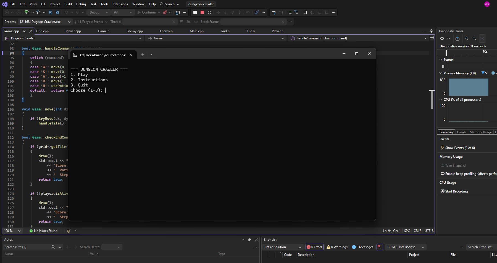

Languages
C++, HTML, CSS
Student Developer Portfolio
I am currently a student at Full Sail University, pursuing my goal of becoming a game developer. I enjoy creating fun and memorable gaming experiences for players. My goal is to join a talented development team where I can contribute my creativity, collaborate with others, and help develop, improve, and update games that players love.
About Me
I am a Game Development student at Full Sail University with hands-on experience developing C++ applications using object-oriented programming. I have always wanted to be in the game industry ever since I was young and i am in the process of making that dream come true
C++, HTML, CSS
Classes and objects, header/source files, vectors, loops, functions, input validation, debugging
Visual Studio, Git, GitHub (branches, pull requests, Projects board and Issues)
Featured Work
Replace the sample information below with your own work. Add screenshots, explain what each project does, and describe your development process.

C++ Console Application
Dungeon Crawler is a text-based C++ game where the player moves through a dungeon, faces encounters, fights enemies, and uses healing potions to survive while working toward completing the game. I built it to practice organizing a larger program into separate classes and functions, and to improve the player experience by testing edge cases.
C++, Visual Studio, Git, GitHub (branches, pull requests, Projects board and Issues), object-oriented programming
My menu broke when a player typed a letter or symbol where the game expected a number. The input stream went into a failed state, and the menu looped endlessly because every following read failed too. It was hard to find because the game worked normally with valid input.
I learned how to break a larger game into smaller classes and functions so the code stays organized, and how testing edge cases exposes problems I would not have found by playing normally. GitHub workflow, planning with weekly milestones.
Previous Project · C++ Console Application
A console-based C++ application where players manage a grid-based inventory and craft items from raw materials. I built it with four classes (Item, Inventory, Recipe, and Player) to practice object-oriented design and separation of concerns.
This project strengthened my use of classes and separating responsibilities. I also built a separate SDL graphics visualizer, which gave me experience with inheritance, abstract classes, pointers, and memory management.
Contact
Replace the links below with your professional profiles. Do not publish your home address, student ID, personal phone number, or other private information.